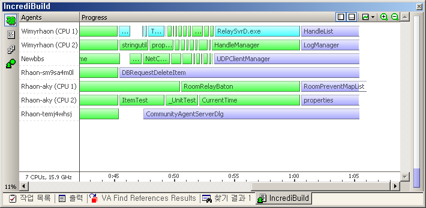

incrediBuild
http://www.xoreax.com/features\_main.htm
멤버십 OT 에 갔다가 다른 회사에서 병특을 한다는 후배로부터 분산 컴파일러에 대한 얘기를 들었었다. 바로 이 incrediBuild 에 관한 얘기였는데, 회사에서 컴파일 시간이 15분 넘게 걸리는 상황인지라 테스트를 해보게 되었다.
30일 체험판을 다운받아서 깔았는데, 기본 설정은 간단했다. 한대를 Coordinator 로 설치하고, 나머지 컴퓨터들은 Agent 로 설치한 후 Coordinator 를 지정해준다. 그러면 Agent 를 설치한 컴퓨터들의 Visual Studio 에 'incrediBuild' 라는 메뉴가 붙으면 이 메뉴의 하위 메뉴의 Build, Rebuild 들을 실행시키면 분산 컴파일을 시켜준다.
약 6대의 컴퓨터를 붙여보니 7분대로 떨어졌다. 여러대가 분산해서 컴파일을 하지만 분산이 안되는 부분(실행 파일 링크나, 의존성에 의해 이전 파일을 기다리는 경우)이 존재하기 때문에 컴파일 시간이 선형적으로 떨어지는 것은 아니었다. 하지만 꽤 쓸만한 결과를 보여주었다. 그리고 컴파일하는 과정을 그래픽으로 표시해주는 데 왠지 멋지다 ㅋㅋ

회사에서는 구입을 고려해보는 중이나 어쩌다가 한번 Visual Studio Build(기존의 일반적인 빌드)에서는 에러를 안 내는데, incrediBuild 에서는 어쩌다가 한번 알 수 없는 에러(50번 빌드 중 한번 정도)를 내는 경우가 있어서 좀 더 테스트를 해보기로 했다. 여튼 꽤 쓸만한 툴임에는 틀림없다. 컴파일 시간이 오래 걸리는 프로젝트를 진행 중이라면 한번쯤 테스트해보시길~~
참고로 VC++ 6.0, .NET 2003, .NET 2005 를 지원해준다. 아직은 C++ 만 지원해주는 듯(C# 에서는 분산 컴파일이 안되는듯)